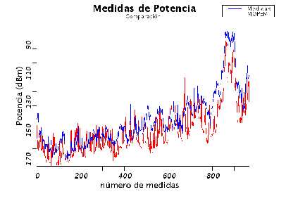

La creación del modelo de propagación para entornos urbanos de
pequeños macroceldas (MOPEM) se basó en una zona urbana de
Montevideo a una frecuencia en el entorno de 900 MHz, lo cual a
priori indicaría similares características al escenario aquí
presente en el estudio de propagación en el centro de Munich. Sin
embargo, una diferencia no menor es que en el modelo Mopem la altura
de la radiobase se considera mayor que las alturas de las
edificaciones circundantes, hipótesis que no se cumple siempre en el
caso de Munich. De todas formas, se procedió a realizar la
comparación con las medidas reales imponiendo que el término en la
ecuación de que realiza la diferencia entre la altura de
la radiobase y el promedio de las alturas de los edificios
circundantes (ver sección 5.3.3) sea cero cuando la altura de
la radiobase sea menor a éstas.
En la tabla 12.5 se resumen los resultados de la
implementación del modelo con los parámetros por defecto en las tres
rutas del centro de Munich y para una mejor evaluación del
comportamiento se puede visualizar en la figura 12.7
la comparación de la estimación con las medidas reales en la ruta 0.
Se observa al igual que en el caso de COST231-WI una sobreestimación
de las pérdidas en los trayectos involucrados respecto a las medidas
reales. Partiendo de la base que no se está dentro de las hipótesis
del modelo (la altura de la radiobase es menor a la de los edificios
circundantes), y que tampoco se considera un factor correctivo para
estos casos, se puede concluir que los resultados fueron bastante
favorables.
Tabla 12.5:
Media y desviación estándar del error para el modelo de
Mopem
Ruta
(dB)
(dB)
route00
-7.93
9.25
route01
-10.43
9.39
route02
-11.66
10.32
Si se compara el comportamiento con los resultados obtenidos con el
modelo COST231-WI, en el cual se basa Mopem, se observan valores muy
similares en lo que respecta a la varianza, pero una media mayor en
el error. Sin embargo, es importante destacar que Mopem, a
diferencia de éste, no realiza la distinción entre los casos LOS y
NLOS, lo cual mejoraría los resultados en la presente zona de
estudio, aunque se traduciría también en mayores tiempos de cálculo.
Figura 12.7:
Comparación entre las medidas y las estimaciones para la
ruta 0 del modelo de Mopem

Finalmente, tomando como referencia los resultados de aplicar el
modelo en la zona donde se ajustó, donde se obtuvo un error de 0 dB
y una varianza de 5.1 dB, se observa una diferencia significativa en
la media del error mientras que el valor de la varianza no se
encuentra tan alejado. Estas diferencias son fácilmente atribuibles
a que el entorno del centro de Munich difiere de aquel donde se
ajustó el modelo a pesar de tratarse ambos de entornos urbanos, y se
le suma a esto el hecho de que la radiobase en el escenario original
se encontraba por encima de las edificaciones circundantes.
Siguiente:Vogler-Ikegami Subir:Performance de los modelos Anterior:COST231-Walfisch-IkegamiÍndice General
SAPO